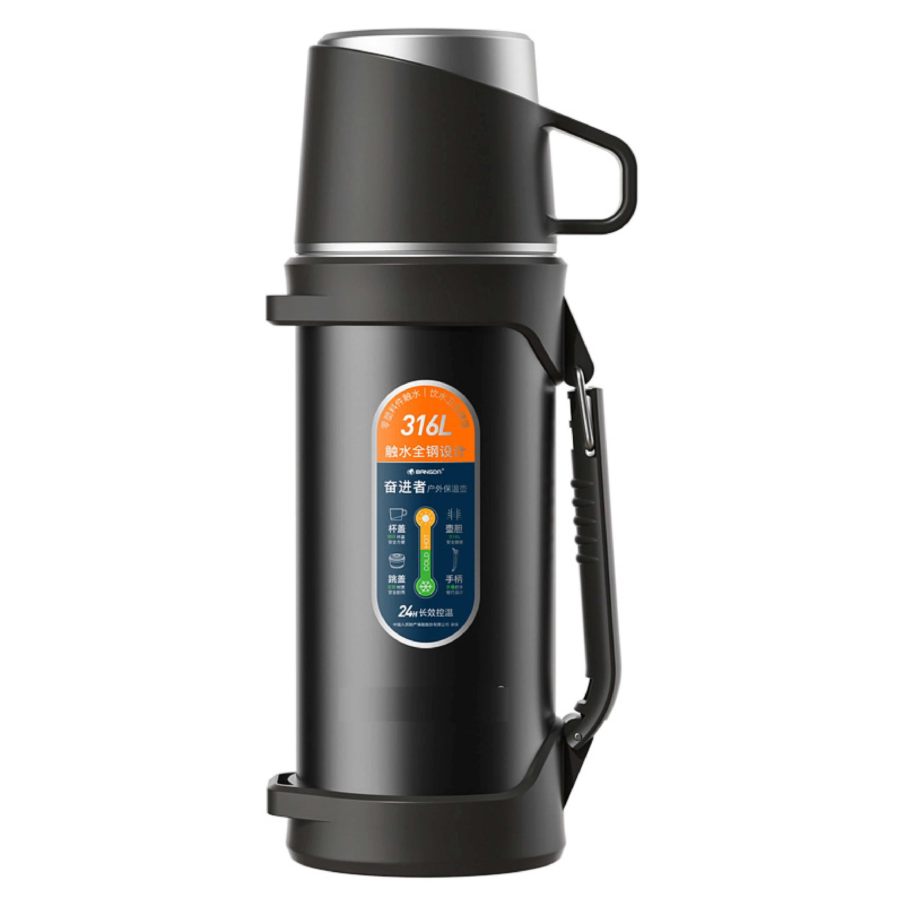
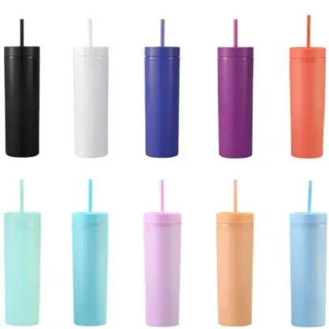
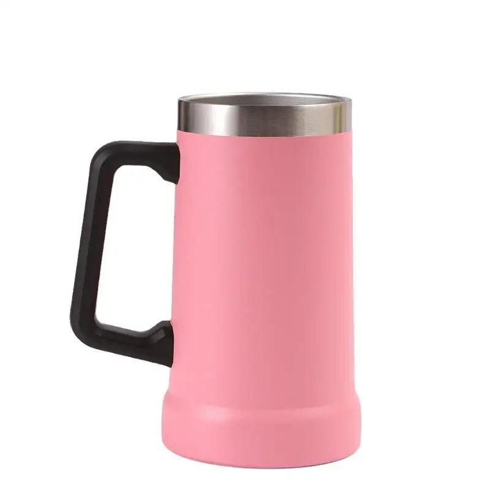

T/T, L/C, deposits and milestone payments explained for importers — what each structure actually means, which one fits your order, and how to protect both sides without killing the deal.
Most drinkware disputes do not start with a bad bottle. They start with a vague payment line in a pro forma invoice — "30% deposit, balance before shipment" with no definition of what counts as shipment, which bank charges whose fee, or what happens if the sample is rejected. This guide sets out how custom drinkware orders are normally paid for, where the real risk sits, and the questions to settle before the first transfer.
Custom drinkware is a made-to-order business. Once a factory cuts steel, vacuums a body, sprays a colour and prints a buyer's logo, that inventory cannot be resold to another customer. The deposit is not a profit grab; it is the cash that buys the steel and holds the production slot. At the same time, the buyer is paying a supplier thousands of miles away before seeing a finished container, so the balance needs to be tied to something verifiable.
Good terms strike a simple balance: the factory gets enough upfront to cover committed cost, and the buyer keeps enough money in hand to have leverage if the goods are wrong. Everything below is a way of achieving that with documents rather than trust alone.

There are more payment instruments in trade finance than you need for a container of tumblers. These three cover the overwhelming majority of OEM/ODM drinkware orders:
| Instrument | How it works | Best for | Watch-out |
|---|---|---|---|
| T/T (telegraphic transfer) | Bank transfer of the deposit and balance, usually in USD | Repeat buyers, small and mid-size orders, samples | Confirm the beneficiary name matches the pro forma invoice exactly; fees may be deducted in transit |
| L/C at sight (letter of credit) | Buyer's bank promises payment against compliant documents | First orders, large shipments, markets with tighter controls | Strict document wording; a small discrepancy can hold payment |
| Open account / 30-day terms | Pay after delivery or after an agreed credit period | Long-term partners after several clean shipments | Rare for new custom orders; usually needs trade insurance or a strong relationship |
For a first order, T/T with a deposit is the fastest path and the instrument most factories quote by default. An irrevocable L/C at sight from a recognised bank is worth the extra paperwork when the order value is high or your finance team requires a bank undertaking. Agree the document list and the exact wording with the factory before you instruct your bank to open the L/C — rewriting a credit after it is issued costs time and money.
The split is a commercial variable, not a fixed rule. The table below shows industry-typical ranges; the right structure for your order depends on value, customization depth and how well the two sides know each other. Treat it as a starting point for negotiation, and ask for the exact figure in your quote.
| Scenario | Typical structure | Why it makes sense |
|---|---|---|
| Samples only | 100% in advance | Low value, quick turnaround, often refundable against a bulk order |
| Stock-model ODM order | 30% deposit / 70% before shipment | Enough to reserve capacity; balance retained until goods are ready |
| New custom mold / OEM | Deposit plus mold fee upfront, balance before shipment | Tooling is a one-off cost paid before the mold is cut |
| Small repeat order | 50% / 50% | Lower absolute value means more leverage can be left with the buyer |
| Large first order | Irrevocable L/C at sight, or staged T/T milestones | Bank undertaking or staged payments reduce exposure on both sides |
One useful trick for a mixed-SKU order: pay the deposit against the whole order but tie the balance to a pre-shipment inspection rather than a calendar date. That way the money moves when the goods are proven right, not simply when a factory says they are finished.

A payment schedule works best when every transfer has a matching deliverable. A clean sequence for a custom drinkware order looks like this:
A surprising number of payment delays are pure administration. Settle these details before the first transfer:

Payment terms are a trust tool, so both parties should be able to point to the same document when something goes wrong. Practical protections for the buyer include: a signed specification sheet attached to the pro forma invoice, the right to inspect before balance payment, and compliance files delivered with the shipping documents. For the factory: a deposit that covers committed material, a written sample sign-off, and a balance that arrives before originals are released.
Watch for these patterns:
None of these means the supplier is dishonest, but each one removes a checkpoint that protects you. A professional factory will not object to a buyer who asks for a signed spec, a copy invoice and a documented inspection — those are the same controls they use with their own suppliers.
Send us your product type, quantity, market and customization. We will reply with an itemized pro forma invoice — specification, Incoterm, deposit structure and lead time — within one business day.
What are typical payment terms for custom drinkware orders?
A common industry structure is 30% deposit by T/T to start production and 70% balance against a copy of the bill of lading or before shipment. Small repeat orders may use 50/50, and samples are normally paid in advance. Exact terms depend on order value, customization and market; confirm them in the pro forma invoice.
Is L/C at sight safe when buying drinkware from China?
An irrevocable L/C at sight issued by a reputable bank is widely used for first or large orders, but it adds bank charges and strict document checking. A small discrepancy in the invoice, packing list or certificate can delay payment, so agree the field wording with the factory before opening the credit.
Why do factories ask for a deposit before production?
The deposit covers raw steel, vacuum furnacing, coating and reserved capacity committed before shipment; it also filters non-serious inquiries. Tie the deposit to a deliverable such as approved samples or a booked production slot rather than paying against a pro forma invoice alone.
Can I pay the balance after receiving the goods?
Open account terms are unusual for first custom orders because the goods carry your brand and cannot easily be resold. After several clean shipments, 30-day terms may be possible, often with trade insurance. For a new supplier, expect the balance before original documents are released.
Yongkang STWADD Houseware Co., Ltd. (the manufacturer behind SSMug) has operated since 2017, runs 500,000+ units of monthly capacity across 167+ stock models, and works under SGS, TÜV, ISO 9001, FDA and LFGB. We quote itemized, and we put payment terms in writing from the first pro forma invoice — no surprises at the balance stage.
Send them over and our team will tell you what is standard for this industry, what is unusual, and what to tighten before you transfer a deposit.